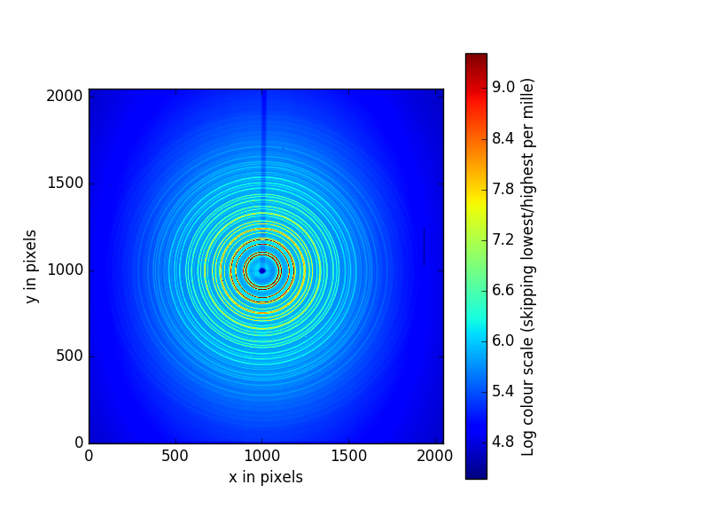
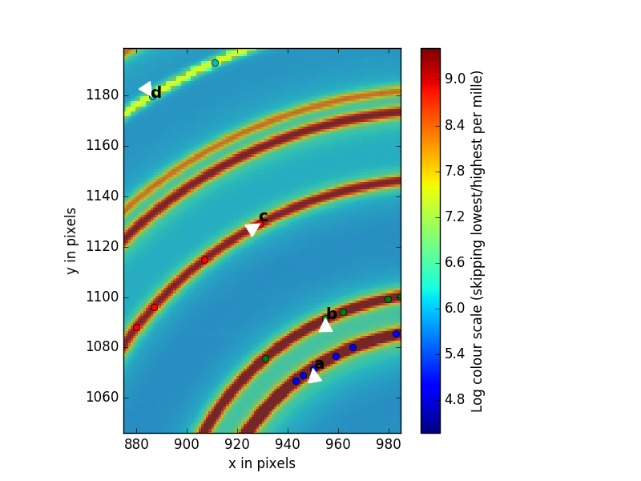
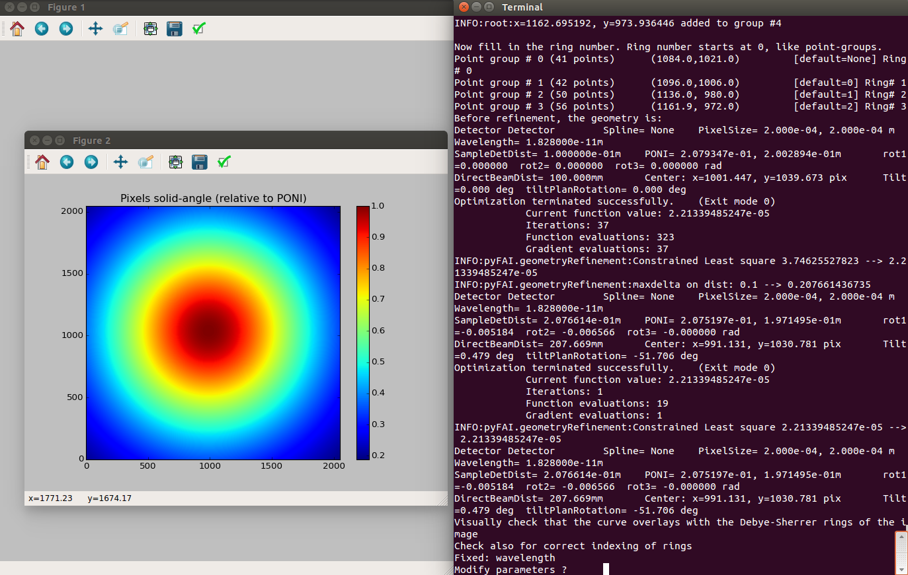

Running scans
The hard work of the experimental setup is now done. It involved creating all the rich metadata container and ScanPlan objects, but with this in the past it makes it easy and low overhead to run the scans, allowing the experimenter to concentrate on the science and not the experimental process.
To run scans there are just a few xpdAcq run engines(functions) that you need. To run a scan you simply pick the run engine you want and give it a predefined Sample object and a predefined ScanPlan object, then hit return and sit back, your scan will be carried out.
The allowed scan types are:
xrun(sample, scanplan)
xrun stands for “XPD run” which is a our main run engine. Full API documentation can be found CustomizedRunEngine API Documentation
Here are some examples of a workflow. Assume a Ni_calibrant sample is loaded on the diffractometer
and the Ni Sample object is created as well as all the ScanPlan we need.
We will start by doing a scan with Sample object Setup on our ct_1 ScanPlan.
Remember, always start with bt.list()
>>> bt.list()
ScanPlans:
0: 'ct_5'
1: 'ct_0.1'
2: 'ct_1'
3: 'ct_10'
4: 'ct_30'
5: 'ct_60'
7: 'ct_1.5'
8: 'ct_100.5'
Samples:
0: Setup
1: Ni
2: kapton_0.9mmOD
3: kapton_1mmOD
4: kapton_0.5mmOD
5: activated_carbon_1
6: activated_carbon_2
7: activated_carbon_3
...
The Sample object I want has list index 0 and the ScanPlan has list index 2. Let’s try to make sure everything is ok.
>>> xrun(0, 2)
INFO: requested exposure time = 1 - > computed exposure time= 1.0
INFO: No calibration file found in config_base. Scan will still keep going on
+-----------+------------+------------+
| seq_num | time | pe1_image |
+-----------+------------+------------+
| 1 | 15:58:47.4 | 5.00 |
+-----------+------------+------------+
generator count ['73dc71'] (scan num: 3)
OK, it seems to work, let’s do some testing to see how much intensity we need. We will do three setup scans with 1.5 seconds and 100.5 seconds exposure and then compare them.
>>> xrun(0, 7) #1.5 seconds
INFO: requested exposure time = 1.5 - > computed exposure time= 1.5
INFO: No calibration file found in config_base. Scan will still keep going on
+-----------+------------+------------+
| seq_num | time | pe1_image |
+-----------+------------+------------+
| 1 | 16:01:37.3 | 5.00 |
+-----------+------------+------------+
generator count ['728f2f'] (scan num: 5)
>>> setupscan(0, 8) #100.5 seconds
INFO: requested exposure time = 100.5 - > computed exposure time= 100.5
INFO: No calibration file found in config_base. Scan will still keep going on
+-----------+------------+------------+
| seq_num | time | pe1_image |
+-----------+------------+------------+
| 1 | 16:02:57.0 | 5.00 |
+-----------+------------+------------+
generator count ['981e70'] (scan num: 6)
It seems that the 2 second scans are the best, so let’s do[b] with desired Sample
to get the first data-set.
>>>In [13]: xrun(0, 8)
INFO: requested exposure time = 100.5 - > computed exposure time= 100.5
INFO: closing shutter...
INFO: taking dark frame....
INFO: No calibration file found in config_base. Scan will still keep going on
+-----------+------------+------------+
| seq_num | time | pe1_image |
+-----------+------------+------------+
| 1 | 16:04:31.4 | 5.00 |
+-----------+------------+------------+
generator count ['d770c7'] (scan num: 7)
opening shutter...
INFO: No calibration file found in config_base. Scan will still keep going on
+-----------+------------+------------+
| seq_num | time | pe1_image |
+-----------+------------+------------+
| 1 | 16:04:31.5 | 5.00 |
+-----------+------------+------------+
generator count ['0beaaf'] (scan num: 8)
Automated dark collection
You might have found something weird when you ran the xrun command:
I only requested one ``xrun`` but the program runs two scans
So what happened?
That is a feature called auto-dark subtraction in xpdAcq.
When you are running your experiment, xpdAcq checks if you have
collected a fresh and appropriate dark frame every time it collects a scan.
The definition of fresh and appropriate is:
Nice and fresh
Given a certain period T (``dark window``), there exists a dark frame with the same **total exposure time** and exactly the same **acquisition time** as the light frame we are about collect.Note
At XPD, the area detector is running in
continuous acquisitionmode, which means detector keeps reading but only saves images whenxpdAcqtells it to save, with the desired exposure time.In short,
acquisition time is the collection time for a single frame from area detector. This can take values between 0.1s to 5s.
exposure time is the user-defined total acquisition time
Automated dark collection is enabled by default and it can be turned off by:
glbl['auto_dark'] = False glbl['shutter_control'] = FalseAnd the duration of your dark window can be modified by:
glbl['dk_window'] = 200 # in minutes. default is 3000 minutesHaving
auto_darkset toTrueis strongly recommended as this enablesxpdAcqto do automated dark frame subtraction when you pull out data from the centralized NSLS-II server.
Automated calibration capture
Often times, keeping track of which calibration file is associated with a specific scan is very tiring. xpdAcq makes this easier or you. Before every
scan is being collected, the program goes to grab the most recent calibration
parameters in xpdUser/config_base and load them as part of the
metadata so that you can reference them whenever you want, and make in-situ data
reduction possible!
Quick guide of calibration steps with pyFAI
1. We assume that you have run run_calibration() in the collection window
with Ni as your calibrant. This will automatically expose the Ni, and after a
pause a 2D plot window should pop up on the acquisition computer, looking
something like this:
That is the image we want to perform our calibration with. Use the magnify tool at the tool bar to zoom in to something that looks like the figure below. The magnifying tool is enabled by clicking on the button on the toolbar that looks like a magnifying glass.
Now we will select five rings that PyFAI will use to do the calibration. To do this click on the magnifying glass button again to deselect the magnifying tool so the cursor looks like an arrow. You will place the tip of the arrow on the first ring and then RIGHT click. you will see dots going around the ring you have selected. Then repeat this for the other four rings you will select. For the highest accuracy, We recommend that you select the first, second, third and 6th ring, as shown in the figure. The 6th ring is weaker but well separated from its neighbor.

If you don’t like what you have selected, you can exit out using
CTL-Cand start again by running run_calibration(). However, if you are happy with your selections accept them by first making the collection terminal window active by clicking on it, then hitting<enter>.You will now follow the instructions coming from PyFAI. It asks you to supply the indices of the rings you have selected. Because PyFAI was written by a computer scientist and not a scientist, the first ring has number 0, the second has number 1, the third has number 2 and the 6th has number 5.
If everything has gone well, after supplying all the indices, PyFAI will pop up a number of plots that can give an expert eye some indication of the quality of the calibration. We recommend that you type
recaliband then<enter>when prompted to “modify parameters”. This will cause pyFAI to refine the ring selection. If the dashed lines look as if they are lining up well with the peaks you have a good calibration. If not, CTL-C and start again. If yes, activate the terminal window by clicking on it, hit<enter>at the command prompt then typedone.
PyFAI can be a bit finicky. If it hangs, type CTL-C and start over and make sure you follow the instruction exactly.
Note
You may find more information about calibration process from pyFAI documentation
You are done!
xpdAcqhas saved the calibration parameters and will store them will all subsequent scans until you run another calibration.To see the current calibration parameters, type
show_calib().You can also find the calibration parameters in a file called
pyFAI_calib.ymlin.../xpdUser/config_base
To clean up you can close all the PyFAI windows, including the 1D integration and 2D regrouping results that pop out (see below). Return to the
Quick start tutorialby hitting the browser back-arrow.

{kind=link}
{kind=link}
{kind=link}
Sample metadata imported from spreadsheet
In order to facilitate retrospective operation on data, we suggest you to enter
as much information as you can and that is the main philosophy behind xpdAcq.
Typing in sample metadata during beamtime is always less efficient and it wastes your time so a pre-populated excel sheet with all metadata entered beforehand turns out to be the solution.
In order import sample metadata from spreadsheet, we would need you to have a
pre-filled spreadsheet with name <saf_number>_sample.xls sit in xpduser/import
directory. Then the import process is simply:
import_sample_info()
xpdAcq will grab the saf_number and bt for current beamtime, so make sure you have your spreadsheet named with proper format. For example, if your SAF number is 300179, then you should have your pre-populated spreadsheet with the name as 300179_sample.xls, sit inside xpdUser/import directory.
To parse the information filled inside your spreadsheet, we have designed several rules and here are the explanation to each of the rules.
comma separated fields
Files with information entities are separated by a comma
,.Each separated by
,will be individually searchable later.Fields following this parsing rule are:
cif namepointer of potential structures for your sample, if any.
User supplied tagsany comment you want to put on for this measurement.
Example on
User supplied tags:background, standard --> background, standardAnd a search on either
backgroundor``standard`` later on will include this header.
name fields
Fields that are used to store a person’s name in
first name last nameformat.Each person’s first and last name will be searchable later on.
Fields following this parsing rule are:
Collaboratorsname of your collaborators
Sample Makername of your sample maker
Lead Experimentersa person who is going to lead this experiment at beamline
Example on name fields:
Maxwell Terban, Benjamin Frandsen ----> Maxwell, Terban, Benjamin, FrandsenA search on either
MaxwellorTerbanorBenjaminorFrandsenlater will include this header.
phase string
Field used to specify the phase information and chemical composition of your sample. It’s important to enter this field correctly so that we can have accelerated data reduction workflow.
Fields follows this parsing rule are:
Phase Infofield to specify phase information and chemical composition of your sample
phase string will be expect to be enter in a form as
phase_1: amount, phase_2: amount.An example of 0.9% sodium chloride solution will be:
Nacl: 0.09, H20: 0.91This
Phase Infowill be parsed as:{'sample_composition': {'Na':0.09, 'Cl':0.09, 'H':1.82, 'O':0.91}, 'sample_phase': {'NaCl':0.09, 'H20':0.91}, 'composition_string': 'Na0.09Cl0.09H1.82O0.91'}
composition_stringis designed for data reduction software going to be used. UnderxpdAcqframework, we will assume pdfgetx3As before, a search on
NaorClorHorOwill include this header. Also a search onNacl=0.09will include this header as well.
dictionary-like fields
Fields that are utilized to store information as
key-value pairformat. Standard format of it iskey: valueand it also follows the comma-separate ruleFields following this parsing rule are:
structural database ID for phasesdatabase name and the ID for sample phases
Example on dictionary-like fields:
ICSD:41120, CCDC:850926 ----> {'ICSD': '41120', 'CCDC': '850926'}
Sample Objects
Sample:
Each row in your spreadsheet will be taken as one valid Sample and metadata will be parsed based on the contents you type in with above parsing rule.
Generally, after successfully importing sample from spreadsheet, that is what you would see:
In [1]: import_sample_info()
*** End of import Sample object ***
In [2]: bt.list()
ScanPlans:
Samples:
0: P2S
1: Ni_calibrant
2: activated_carbon_1
3: activated_carbon_2
4: activated_carbon_3
5: activated_carbon_4
6: activated_carbon_5
7: activated_carbon_6
8: FeF3(4,4-bipyridyl)
9: Zn_MOF
...
41: ITO_glass_noFilm
42: ITO_glass_1hrHeatUpTo250C_1hrhold250C_airdry
43: ITO_glass_1hrHeatUpTo450C_1hrhold450C_airdry
44: ITO_glass_30minHeatUpTo150C_1.5hrhold150C_airdry
45: CeO2_film_calibrant
46: bkg_1mm_OD_capillary
47: bkg_0.9mm_OD_capillary
48: bkg_0.5mm_OD_capillary
49: bkg_film_on_substrate
Background:
It is recommended to run a background scan before your sample so it is available for the automated data reduction steps. It also allows you to see problems with the experimental setup, for example, crystalline peaks due to the beam hitting a shutter.
You can associate a Sample as the background for the desired Sample freely. Linking the background with the sample together also makes the data-reduction workflow easier.
We specify this grouping by entering background sample name into the
Sample-name of sample backgroundcolumn in the spreadsheet. You can fill in the Sample Name of your background to whichever sample you want to relate.For example, in our spreadsheet template we created pure background objects kapton_1mmOD, kapton_0.9mmOD and kapton_0.5mmOD and we link Ni with background kapton_1mmOD by specifying it at
Sample-name of sample backgroundcolumn.A proper linking between Sample and Background can be seen from metadata stored inside the
Sampleobject. As usual, let’s interrogate the metadata:In[]: bt.samples.get_md(15) # that's for example, index depends on # your spreadsheet out[]: {'bkgd_sample_name': 'kapton_0.9mmOD', 'bt_piLast': 'Billinge', ... }
The example above shows your
Samplewith index15has been linked with backgroundkapton_0.9mmOD. This can largely speeds up the automated data-reduction workflow that we will have in the future!
Auto-masking
Masking can be a tedious process, requiring long hours judging which pixels are good and which need to be removed. The our automated masking software aims to alleviate this by applying a set of masks in sequence to return better quality data.
Masks can be created/used in two ways. The default procedure is a mask is created for a low scattering sample (usually kapton). Then this mask is reused for each subsequent image taken with the same detector position. The second modality is that each image gets is own bespoke mask, potentially derived from the low scattering mask.
Applied masks
- Any mask passed in to the software:
If you have any preexisting masks, we will use those as a starting position to add upon.
- Edge mask:
A default of 30 pixels from the edge of the detector are masked out. These pixels are usually faulty as the detector edge has lower than expected intensity.
- Lower threshold mask:
A lower threshold mask, which removes all pixels who’s intensities are lower than a certain value is applied. The default threshold is 0.0
- Upper threshold mask:
An upper threshold mask, which removes all pixels who’s intensities are higher than a certain value is applied. This mask is not applied in the default settings.
- Beamstop holder mask:
A beamstop holder mask, which removes pixels underneath a straight beamstop holder is applied. The beamstop holder is masked by finding the beamcenter and drawing a pencil like shape from the beamcenter to the edge of the detector. All the pixels within this polygon are masked. The default settings are to mask out 30 pixels on either side of the line connecting the beamcenter and the detector edge
- Binned outlier mask:
Lastly a binned outlier mask is applied, removing pixels which are alpha standard deviations away from the mean intensity as a function of Q. This mask aims to remove many of the dead/hot pixels and streaks. The default alpha is 3 standard deviations.
client/server metadata schema
Overview with an example
The client/server schema associate different data with a centralized
mapping, which would allow a more flexible way to link data. Let’s take
calibration as an example. Ideally one will perform a calibration run
before collecting any data so that subsequent runs will be referenced to
the experimental geometry deduced from this calibration run. However,
there might be some time calibration run is executed after data is
collected due to practical situation. Under traditional metadata schema,
the data collected prior to the calibration will not be able to associated
with given geometry in a systematic way; it relies on experimenter to
identify which data should be grouped and this add complexities of
analyzing data after the beamtime.
The client/server schema is designed to solve the problem described above.
At the beginning of the beamtime, an unique exp_hash_uid is generated.
Every subsequent run will inserted with the metadata client_uid=exp_hash_uid
while the calibration run will have server_uid=exp_hash_uid in the metadata.
Therefore, by querying scans with the matched client/server uid, production runs
and calibration runs are linked by regardless the order in time. Furthermore,
this client/server schema would allow the recalibration if any factor related
to defining experimental geometry, such as wavelength, was known to be in accurate.
The client/server logic can be extended to other kinds of mapping as well.
Currently, xpdAcq utilizes this logic in associating calibration runs with
production runs.
when and how to change exp_hash_uid?
It’s strongly suggested to update the exp_hash_uid whenever there is
a sensible change to your experimental setup, for example, different detectors,
changes in sample stages, fluctuation of ring current and so on. In this way,
the data that is referenced to the same experiment condition will be more
tightly associated and will make future data analysis easier as direct comparison
is possible.
To update the exp_hash_uid, please type following command in the collection
terminal of your ipython.
update_exp_hash_uid()
# example output
#INFO: experiment hash uid has been updated to 3020835e-9cb3-4c63-9bf4-4834bf5e865f
Once exp_hash_uid is updated, all subsequent runs will have the
updated client_uid metadata and calibration runs will has this new uid
as server_uid.
Note
The idea of hash is borrowed from computer science. It means we conceptually
represent all experiment related factors, ranging from the instruments inside
and outside the hutch, synchrotron beam current to ambient temperature, as a
unique identifier, uid. Therefore, this identifier could be use for mapping
data that shares common experiment related factors.
User defined folder tag
You can also add metadata to the run by adding key word arguments to the run eg
xrun(0, 8, my_scan_tag='hello world'). Some pieces of metadata are special,
like folder_tag_list. When folder_tag_list is added
(eg xrun(0, 8, folder_tag_list=['status', 'sample_name', bt_piLast'], status='after_saxs')
the values for those keys will be added to the file path in the same order as
the list
(eg <.../tiff_base/after_saxs/Ni/billinge/mask/file_name> for an experiment
on Nickel run by the Billinge group).